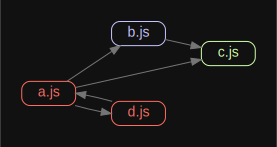
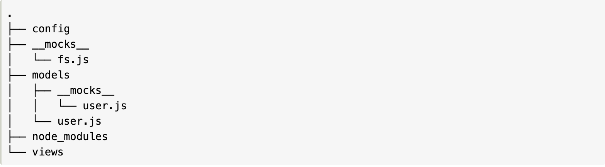

<h3 style="color:#e7ad52">Mocks in Jest</h3>
<h4 style="color:#e7ad52">We are going to talk about</h4> - What are mocks - Benefits of mocking - How to create mocks in Jest - Manual implementation of jest.fn()
<h4 style="color:#e7ad52">What are Mocks?</h4> - A mock is an object or a function that replicates the behaviour of its real counterpart. - The behaviour of a mock is totally controlled. - Mocks provide additional functionality over simple stub functions
<h4 style="color:#e7ad52">Benefits of Mocking</h4> <h6><small>In jest, there is truth (W.Shakespeare)</small></h6>
<h4 style="color:#e7ad52">Benefits of Mocking</h4> 1. Allows the user to test functionality regardless of the dependencies 2. Test cases cover the funcitonality of individual modules 3. When a test fails. The problem is in the component being tested
<h4 style="color:#e7ad52">Dependency Diagram</h4> 
<h4 style="color:#e7ad52">Ways of Creating Mocks in Jest</h4> Include - Automocking - Using Jest api - Creating manual mocks
<h4 style="color:#e7ad52">Automocking</h4> - Easiest way to create a mock - Can be configured in config files of jest (false by default) - <h6 style="color:#e7ad52">However, it is difficult to access modules true functionality</h6> - <h6 style="color:#e7ad52">Performance can be a problem with this approach</h6>
#### package.json (jest config) ```js "jest": { ... "automock": true, ... } ```
```js // utils.js export default { authorize: () => { return 'token'; }, isAuthorized: secret => secret === 'wizard', }; // automock.test.js // public methods of utils are now mock functions import utils from './utils'; test('utils is automatically mocked', () => { expect(utils.authorize.mock).toBeTruthy() // passes }) ```
<h4 style="color:#e7ad52">Using Jest Api (jest.fn(), jest.spyOn() ...)</h4> - More control over the functionality of the mock - Mocked functions can return specific values - The implementation of the mock is defined by the user - It is possible to keep the original implementation and keep track of function calls
```js import math from './math'; math.add = jest.fn() test('calls math.add', () => { const sum = math.add(1, 2); expect(math.add).toHaveBeenCalledWith(1, 2) }) ```
```js import math from './math'; math.random = jest.fn(number => 5) test('calls math.random and gets result', () => { const num = math.random(3); expect(math.random).toHaveBeenCalledWith(3); expect(num).toBe(5); }) ```
```js import math from './math'; math.add = jest.spyOn(math, 'add'); test('calls math.add and gets correct answer', () => { const num = math.add(2, 3) expect(math.add).toHaveBeenCalledWith(2, 3); expect(num).toBe(5); }) ```
<h4 style="color:#e7ad52">Manual Mocks</h4> - Gives full control to the user - Can mock both functions and modules - Can mock node modules - <h6 style="color:#e7ad52">Usually requires more time and effort then using Jest API</h6>
<h4 style="color:#e7ad52">The `` __mocks__ `` directory</h4> - Manual mocks are defined by writing a module in the ``__mocks__`` directory which is adjacent to the module we want to mock - When the module is imported, calling ``jest.mock('./modulename')`` is required if automock is turned off - When mocking a node module, the ``__mocks__`` directory should be adjacent to ``node_modules`` - Manual mocks of node modules are automatically applied once the module is imported

## Questions? #### THANK YOU!